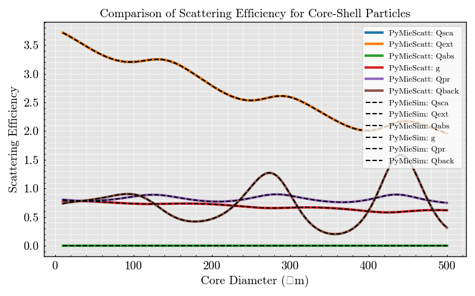

Note
Go to the end to download the full example code.
Core-Shell Particles: 1#
# Standard library imports
import numpy as np
import pandas as pd
import matplotlib.pyplot as plt
from TypedUnit import ureg
# PyMieSim imports
from PyMieSim.experiment.scatterer import CoreShell
from PyMieSim.experiment.source import Gaussian
from PyMieSim.experiment import Setup
from PyMieSim.directories import validation_data_path
from MPSPlots.styles import mps
# Define parameters
wavelength = 600 * ureg.nanometer # Light source wavelength in meters
polarization = 0 * ureg.degree
optical_power = 1 * ureg.watt # Optical power in watts
NA = 0.2 * ureg.AU # Numerical aperture
medium_index = 1.0 * ureg.RIU
core_index = 1.5 * ureg.RIU
shell_index = 1.4 * ureg.RIU
shell_thickness = 1200 * ureg.nanometer # Shell width in meters
core_diameters = np.geomspace(10, 500, 400) * ureg.nanometer # Core diameters in meters
# Configure the Gaussian source
source = Gaussian(
wavelength=wavelength, polarization=polarization, optical_power=optical_power, NA=NA
)
# Setup core-shell scatterer
scatterer = CoreShell(
core_diameter=core_diameters,
shell_thickness=shell_thickness,
core_property=core_index,
shell_property=shell_index,
medium_property=medium_index,
source=source,
)
# Create experimental setup
experiment = Setup(scatterer=scatterer, source=source)
comparison_measures = ["Qsca", "Qext", "Qabs", "g", "Qpr", "Qback"]
# Simulate using PyMieSim
pymiesim = experiment.get(*comparison_measures, as_numpy=True)
pymiescatt_dataframe = pd.read_csv(
validation_data_path / "pymiescatt/example_coreshell_1.csv"
)
# Plot results
with plt.style.context(mps):
figure, ax = plt.subplots(1, 1)
for string in comparison_measures:
ax.plot(
pymiescatt_dataframe["core_diameter"],
pymiescatt_dataframe[string],
label="PyMieScatt: " + string,
linewidth=3,
)
for data, string in zip(pymiesim, comparison_measures):
ax.plot(
core_diameters.to(ureg.nanometer).magnitude,
data,
label="PyMieSim: " + string,
linestyle="--",
color="black",
linewidth=1.5,
)
ax.set(
xlabel="Core Diameter (μm)",
ylabel="Scattering Efficiency",
title="Comparison of Scattering Efficiency for Core-Shell Particles",
)
plt.legend()
plt.show()
Total running time of the script: (0 minutes 0.424 seconds)